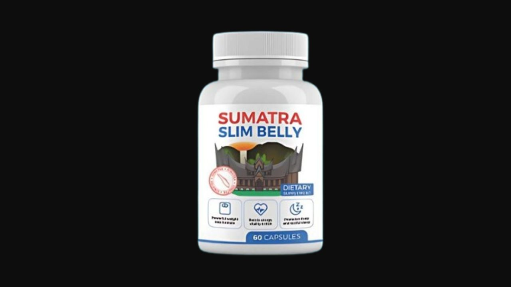

Health Reviews Labs investigated the GLP-1, thermogenesis, and cortisol-adaptation mechanisms behind Sumatra Slim Belly Tonic — a formula built specifically around visceral fat rather than general weight. Here's the honest breakdown.
▶ Watch the full Sumatra Slim video review before deciding

Sumatra Slim Belly Tonic is a weight management liquid formula targeting visceral fat specifically — the metabolically active fat stored around abdominal organs, distinct from the subcutaneous fat stored elsewhere on the body. Visceral fat responds to a different set of biological signals than general body fat, which is why Sumatra Slim's formula centers on GLP-1 pathway support, thermogenesis, and cortisol adaptation rather than generic appetite suppression.
Visceral fat is more metabolically active than subcutaneous fat and is more directly tied to cortisol — the stress hormone that signals the body to preferentially store fat around the midsection during periods of chronic stress. This is hormonal, not behavioral — meaning willpower and discipline don't fix it the way addressing the underlying GLP-1 and cortisol signaling does.
Blue Spirulina supports the GLP-1 pathway — the same satiety-hormone signaling system targeted by modern prescription weight-management approaches — helping regulate appetite and fullness signals naturally. Fucoxanthin, a carotenoid derived from brown seaweed, has research specifically on visceral fat thermogenesis, activating UCP1 protein in fat tissue to increase calorie burning specifically in abdominal fat stores. Panax Ginseng supports cortisol adaptation — helping the body's stress response normalize rather than staying chronically elevated, which is the upstream driver of stress-related belly fat storage. The formula is taken before bed, when cortisol naturally begins its overnight decline, supporting the body's natural rhythm rather than working against it.
Supports the GLP-1 satiety pathway, helping regulate appetite and fullness signals through the same hormonal system targeted by modern weight-management approaches.
A carotenoid from brown seaweed with research specifically on visceral fat thermogenesis via UCP1 protein activation in abdominal fat tissue.
Supports cortisol adaptation, helping normalize the chronic stress response that drives preferential abdominal fat storage.
Activates GABA receptors to facilitate deep sleep, supporting the overnight cortisol decline the formula is timed around.
Supports circadian rhythm regulation, complementing Valerian's sleep-onset effects.
A precursor to both serotonin and melatonin, also associated with appetite reduction.
Blood glucose and fat metabolism support, hormonal balance, abdominal fat reduction research, and gut health/satiety regulation.
Sumatra Slim Belly Tonic occupies a genuinely different niche than most weight management products by targeting visceral fat specifically through GLP-1 support, thermogenesis, and cortisol adaptation — rather than generic appetite suppression. For people whose weight struggles concentrate specifically around the midsection and correlate with chronic stress, this targeted approach addresses a root cause that generic formulas miss entirely.
8-Ingredient Bedtime Formula
→ Click Here for Official SiteAs Valerian and Hops begin supporting deep N-REM sleep onset.
As improved sleep quality begins translating into hormonal fat-storage changes.
Particularly noticeable in the midsection, consistent with the cortisol-driven mechanism.
Sleeping through the night for the first time in months is the most consistently reported first change, typically within the first week. Clothes fitting noticeably looser despite no deliberate diet change tends to follow by week three, with continued midsection-specific weight reduction building through week eight — a pattern consistent with the cortisol-driven mechanism the formula targets.
Pricing reflects typical official-site structure for this category — confirm current pricing on the official site before purchase.
Bedtime Formula · 90-Day Guarantee
→ Click Here for Official Site